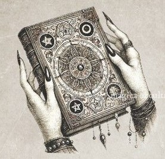

Grimorio Oculto

Usos Mágicos
Hechizos
•
Rituales
•
Hierbas
•
Propiedades
•
Fases Lunares
•
Sueños
•
Significados
•
Talismanes
•
Amuletos
•
Elementos
•
Meditaciones
•
Visualizaciones
•
Sabbats
•
Experiencias
•
Observaciones
•
Métodos de Adivinación
•
Oraciones
•
Símbolos
•
Sigilos
•
Tarot
•
Pendulo
•
Runas
•
Dioses
•
Magia roja
•
Instagram
Facebook
TikTok